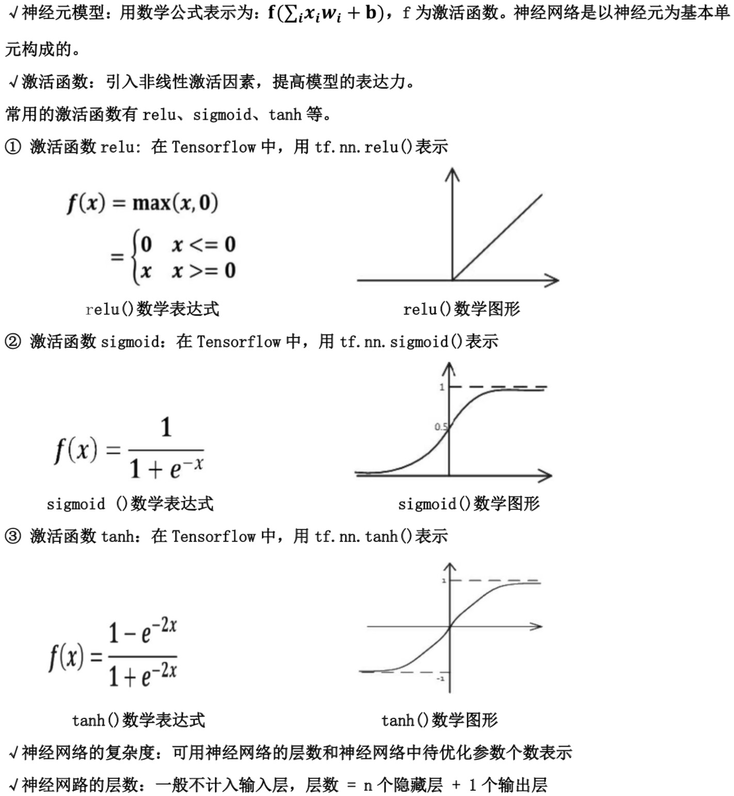
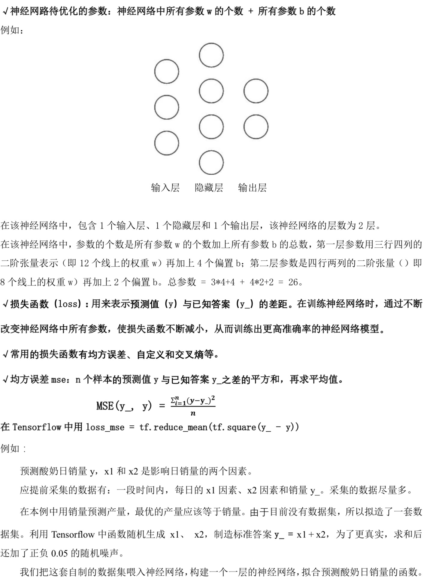
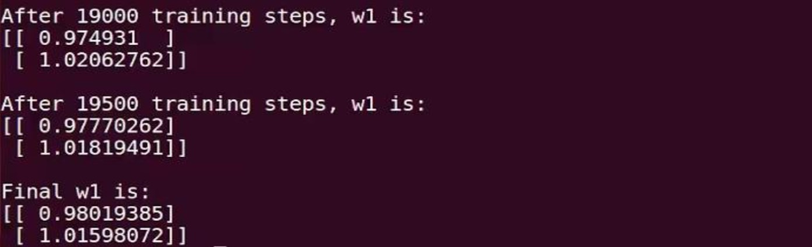
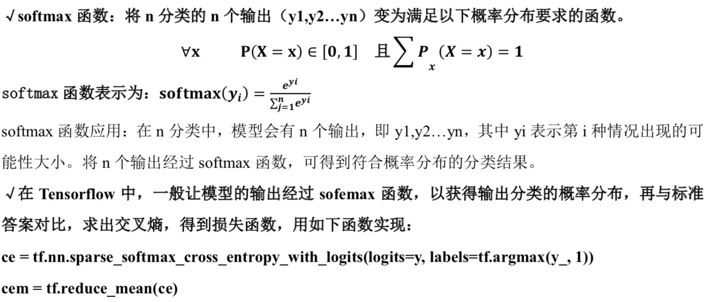
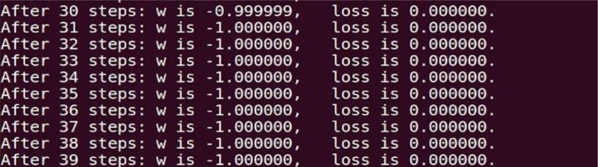
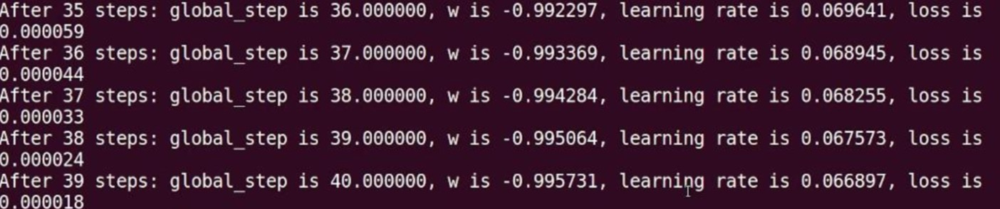
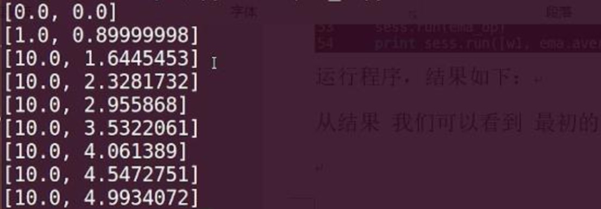
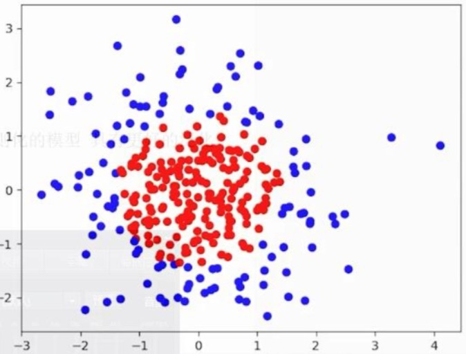
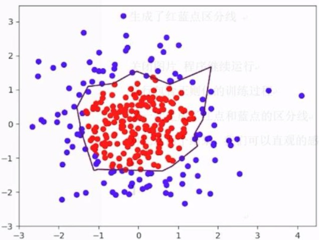
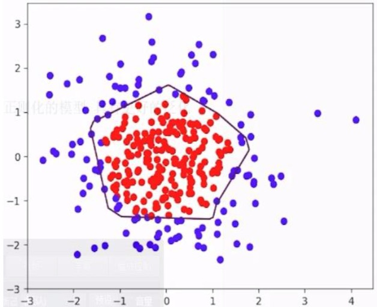

1


1 | #coding:utf-8 |
运行结果如下:

由上述代码可知，本例中神经网络预测模型为 y = w1x1 + w2x2，损失函数采用均方误差。通过使 损失函数值(loss)不断降低，神经网络模型得到最终参数 w1=0.98，w2=1.02，销量预测结果为 y = 0.98x1 + 1.02x2。由于在生成数据集时，标准答案为 y = x1 + x2，因此，销量预测结果和标准 答案已非常接近，说明该神经网络预测酸奶日销量正确。
自定义损失函数:根据问题的实际情况，定制合理的损失函数。
例如: 对于预测酸奶日销量问题，如果预测销量大于实际销量则会损失成本;如果预测销量小于实际销量则 会损失利润。在实际生活中，往往制造一盒酸奶的成本和销售一盒酸奶的利润是不等价的。因此，需 要使用符合该问题的自定义损失函数。
自定义损失函数为:loss = ∑𝑛𝑓(y_, y)
其中，损失定义成分段函数:
1 | f(y_,y)=𝑃𝑅𝑂𝐹𝐼𝑇∗(𝑦_−𝑦) 𝑦<𝑦_ |
损失函数表示，若预测结果 y 小于标准答案 y_，损失函数为利润乘以预测结果 y 与标准答案 y_之差; 若预测结果 y 大于标准答案 y_，损失函数为成本乘以预测结果 y 与标准答案 y_之差。
用 Tensorflow 函数表示为:
loss = tf.reduce_sum(tf.where(tf.greater(y,y_),COST(y-y_),PROFIT(y_-y)))
1 若酸奶成本为 1 元，酸奶销售利润为 9 元，则制造成本小于酸奶利润，因此希望预测的结果 y 多
一些。采用上述的自定义损失函数，训练神经网络模型。
代码如下:
1 | #coding:utf-8 |
运行结果如下:

交叉熵(Cross Entropy):表示两个概率分布之间的距离。交叉熵越大，两个概率分布距离越远，两 个概率分布越相异;交叉熵越小，两个概率分布距离越近，两个概率分布越相似。 交叉熵计算公式:𝐇(𝐲_ , 𝐲) = −∑𝐲_ ∗ 𝒍𝒐𝒈 𝒚
用 Tensorflow 函数表示为
ce= -tf.reduce_mean(y_* tf.log(tf.clip_by_value(y, 1e-12, 1.0)))
2
学习率 learning_rate:表示了每次参数更新的幅度大小。学习率过大，会导致待优化的参数在最 小值附近波动，不收敛;学习率过小，会导致待优化的参数收敛缓慢。 在训练过程中，参数的更新向着损失函数梯度下降的方向。
参数的更新公式为:
𝒘𝒏+𝟏 = 𝒘𝒏 − 𝒍𝒆𝒂𝒓𝒏𝒊𝒏𝒈_𝒓𝒂𝒕𝒆𝛁
1 | #coding:utf-8 |
运行结果如下:

由结果可知，随着损失函数值的减小，w 无限趋近于-1，模型计算推测出最优参数 w = -1。
学习率的设置 学习率过大，会导致待优化的参数在最小值附近波动，不收敛;学习率过小，会导致待优化的参数收 敛缓慢。
指数衰减学习率:学习率随着训练轮数变化而动态更新
1 | #coding:utf-8 |
运行结果如下:

由结果可以看出，随着训练轮数增加学习率在不断减小。
3
滑动平均:记录了一段时间内模型中所有参数 w 和 b 各自的平均值。利用滑动平均值可以增强模 型的泛化能力。
滑动平均值(影子)计算公式:
影子 = 衰减率 * 影子 +(1 - 衰减率)* 参数
其中，衰减率 = 𝐦𝐢𝐧 {𝑴𝑶𝑽𝑰𝑵𝑮𝑨𝑽𝑬𝑹𝑨𝑮𝑬𝑫𝑬𝑪𝑨𝒀 , 𝟏+轮数 /10+轮数}，影子初值=参数初值
√用 Tesnsorflow 函数表示为:
√ema = tf.train.ExponentialMovingAverage(MOVING_AVERAGE_DECAY，global_step) 其中，MOVING_AVERAGE_DECAY 表示滑动平均衰减率，一般会赋接近 1 的值，global_step 表示当前 训练了多少轮。
√ema_op = ema.apply(tf.trainable_variables()) 其中，ema.apply()函数实现对括号内参数求滑动平均，tf.trainable_variables()函数实现把所有 待训练参数汇总为列表。
√with tf.control_dependencies([train_step, ema_op]):
train_op = tf.no_op(name=’train’)
其中，该函数实现将滑动平均和训练过程同步运行。
查看模型中参数的平均值，可以用 ema.average()函数。
例如:
在神经网络模型中，将 MOVING_AVERAGE_DECAY 设置为 0.99，参数 w1 设置为 0，w1 的滑动平均值设 置为 0。
1开始时，轮数 global_step 设置为 0，参数 w1 更新为 1，则 w1 的滑动平均值为:
w1 滑动平均值=min(0.99,1/10)0+(1– min(0.99,1/10)1 = 0.9
3 当轮数 global_step 设置为 100 时，参数 w1 更新为 10，以下代码 global_step 保持为 100，每
次执行滑动平均操作影子值更新，则滑动平均值变为:
w1 滑动平均值=min(0.99,101/110)0.9+(1– min(0.99,101/110)10 = 0.826+0.818=1.644 3再次运行，参数 w1 更新为 1.644，则滑动平均值变为:
w1 滑动平均值=min(0.99,101/110)1.644+(1– min(0.99,101/110)10 = 2.328 4再次运行，参数 w1 更新为 2.328，则滑动平均值:
w1 滑动平均值=2.956
代码如下:
1 | #coding:utf-8 |
运行程序，结果如下:

从运行结果可知，最初参数 w1 和滑动平均值都是 0;参数 w1 设定为 1 后，滑动平均值变为 0.9; 当迭代轮数更新为 100 轮时，参数 w1 更新为 10 后，滑动平均值变为 1.644。随后每执行一次，参数 w1 的滑动平均值都向参数 w1 靠近。可见，滑动平均追随参数的变化而变化。
4
√过拟合:神经网络模型在训练数据集上的准确率较高，在新的数据进行预测或分类时准确率较 低，说明模型的泛化能力差。
√正则化:在损失函数中给每个参数 w 加上权重，引入模型复杂度指标，从而抑制模型噪声，减小 过拟合。
使用正则化后，损失函数 loss 变为两项之和:loss = loss(y 与 y_) + REGULARIZER*loss(w)其中，第一项是预测结果与标准答案之间的差距，如之前讲过的交叉熵、均方误差等;第二项是正则
化计算结果。
√正则化计算方法:
1 L1 正则化: 𝒍𝒐𝒔𝒔𝑳𝟏 = ∑𝒊|𝒘𝒊|
用 Tesnsorflow 函数表示:loss(w) = tf.contrib.layers.l1_regularizer(REGULARIZER)(w) 2 L2 正则化: 𝒍𝒐𝒔𝒔𝑳𝟐 = ∑𝒊|𝒘𝒊|𝟐
用 Tesnsorflow 函数表示:loss(w) = tf.contrib.layers.l2_regularizer(REGULARIZER)(w) √用 Tesnsorflow 函数实现正则化:
tf.add_to_collection(‘losses’, tf.contrib.layers.l2_regularizer(regularizer)(w) loss = cem + tf.add_n(tf.get_collection(‘losses’))
√matplotlib 模块:Python 中的可视化工具模块，实现函数可视化 终端安装指令:sudo pip install matplotlib
√函数 plt.scatter():利用指定颜色实现点(x,y)的可视化 plt.scatter (x 坐标, y 坐标, c=”颜色”)
plt.show()
√收集规定区域内所有的网格坐标点:
xx, yy = np.mgrid[起:止:步长, 起:止:步长] #找到规定区域以步长为分辨率的行列网格坐标点 grid = np.c_[xx.ravel(), yy.ravel()] #收集规定区域内所有的网格坐标点 √plt.contour()函数:告知 x、y 坐标和各点高度，用 levels 指定高度的点描上颜色 plt.contour (x 轴坐标值, y 轴坐标值, 该点的高度, levels=[等高线的高度])
plt.show()
代码如下：
1 | # coding:utf-8 |
执行代码，效果如下:
首先，数据集实现可视化，x0 + x1 < 2 的点显示红色， x0 + x1 ≥2 的点显示蓝色，如图所示:

接着，执行无正则化的训练过程，把红色的点和蓝色的点分开，生成曲线如下图所示:

最后，执行有正则化的训练过程，把红色的点和蓝色的点分开，生成曲线如下图所示:

对比无正则化与有正则化模型的训练结果，可看出有正则化模型的拟合曲线平滑，模型具有更好的泛 化能力。